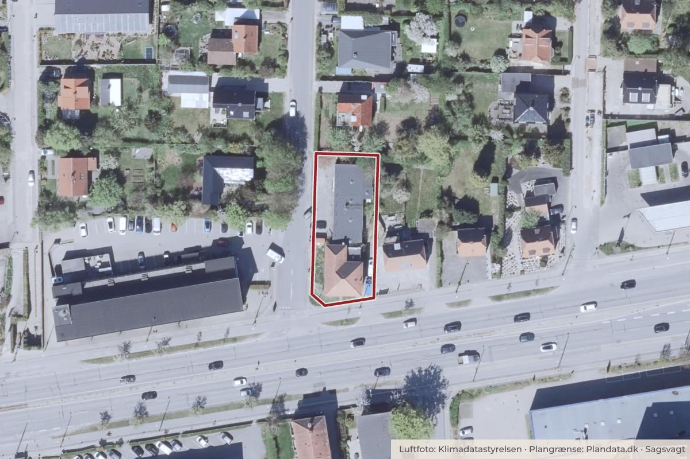

Besluttet 6. oktober, By- og Teknikudvalget, Rødovre
Endelig vedtagelse af Lokalplan 162 Roskildevej 308
Teknisk Forvaltning indstiller, at Lokalplan 162 vedtages endeligt.

Kort: © OpenStreetMap-bidragydere. Plangrænse: Plandata.dk, Rødovre Kommune.

Har du et billede fra Lokalplan 162 Roskildevej 308? Send det til os
Kort fortalt
- Hvem
- By- og Teknikudvalget, Rødovre Kommune
- Hvornår
- Tirsdag 6. oktober 2026
- Status
- Besluttet. Anbefales.
Læs hele sagen Kommunens egen tekst
Indstilling
Teknisk Forvaltning indstiller,
at Lokalplan 162 vedtages endeligt.
Sagsfremstilling
Lokalplanens baggrund
Lokalplan 162 omfatter ejendommen på Roskildevej 308, hvor ejeren har ansøgt om at ændre
anvendelsen af den eksisterende to-etagers villa fra erhvervsformål til boligformål, samt at
nedrive det eksisterende lager-/garageanlæg og opføre tre nye rækkehusboliger.
Kommunalbestyrelsen afviste ansøgningen på mødet tirsdag den 24. februar 2026 (punkt 18)
med hjemmel i planlovens § 14.
Lokalplanens formål
Lokalplanens formål er at fastholde erhverv på ejendommen og hindre ny boligudvikling på
ejendommen. Lokalplanen muliggør følgende erhvervsanvendelser: Liberalt erhvervsliv,
administrationsvirksomhed, privat og offentlig service samt publikumsorienterede
serviceerhverv og klinikker.
Ny bebyggelse skal opføres som sluttet randbebyggelse i 2½-3 etager langs Roskildevej, i
sammenhæng med de østlige naboer. Den maksimale bebyggelsesprocent for den enkelte
ejendom er fastsat til 70.
Lokalplan 162 ses i Bilag 1.
Høringssvar
Lokalplanforslaget var i offentlig høring fra 1. juli til den 26. august 2026.
I høringsperioden er der modtaget to høringssvar.
Høringssvar nr. 1 anmoder om, at Forslag til Loplaplan 162 ændres, således at boligformål
fortsat tillades på Roskildevej 308, og at bestemmelserne i lokalplanens §§ 1 og 3 tilpasses i
overensstemmelse hermed. Det ønskes således fastholdt, at ejendommen kan udvikles til
boligformål i tråd med det tidligere indsendte boligprojekt og den anvendelsesmulighed, der var
gældende ved projektets igangsættelse. Såfremt kommunen ønsker at fastholde særlige
byplanmæssige hensyn til den fremtidige udvikling langs Roskildevej, kan disse hensyn med
fordel sikres gennem bestemmelser om bebyggelsens omfang, placering og udformning, frem
for gennem et generelt forbud mod boligformål.
Teknisk Forvaltnings bemærker til høringssvaret, at der er nedlagt et §14-forbud for at hindre
yderligere spredt boligudvikling i kommunen samt at en ny lokalplan skal være i
overensstemmelse med politiske visioner og mål for kommunens fysiske udvikling.
Høringssvar nr. 2 finder den nuværende boliganvendelse såvel som tidligere
erhvervsanvendelser uhensigtsmæssig og på forskellig vis generende for det tilstødende
villakvarter. Høringssvaret påpeger desuden, at bygningerne er slidte og dårligt vedligeholdte.
Høringssvaret ser positivt på lokalplanens bestemmelser om en ikke-støjende anvendelse og
et grønt, harmonisk udtryk. Høringssvaret ønsker derudover, at den nuværende bom, som
forhindrer biltrafik mellem Axelhøj og Roskildevej, opretholdes.
Teknisk Forvaltnings bemærker til høringssvaret, at ejendommen er registreret som en
erhvervsejendom, og at beboelse dermed var/er ulovlig anvendelse. Forvaltningen kan skride
ind, hvis det konstateres, at ejendommen bruges til beboelse. Ligeledes kan forvaltningen
skride ind overfor støj, hvis der konstateres væsentlige gener. Mangelfuld vedligehold af
ejendommen har kommunen derimod ikke hjemmel til at gribe ind overfor. Den nuværende
bom på Axelhøj er der ingen planer om at fjerne.
De fulde høringssvar kan ses i Bilag 2.
Høringsskemaet med høringssvarets emner, samt Teknisk Forvaltningens bemærkninger og
indstilling kan ses i Bilag 3.
Lov- og plangrundlag
Lov om Planlægning
Lov om Miljøvurdering af planer og programmer
Kommuneplan 2026
Økonomiske konsekvenser
Ingen.
Tidsplan
Endelig vedtagelse - oktober 2026.
Offentlig bekendtgørelse - november 2026.
Beslutning
Anbefales.
Kilde: Rødovre Kommune, By- og Teknikudvalget, referat fra mødet tirsdag 6. oktober 2026, punkt 3. Læs den originale sag hos kommunen.